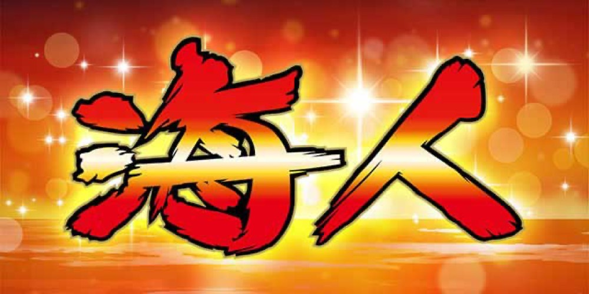

L海人
フルーツ連を重ね、10連の先のIREGUIへ。
- 導入
- 2026年10月
- メーカー
- 岡崎産業
- 分類
- パチスロ
主要スペック
2026年10月19日導入のスマスロ。Aタイプの分かりやすさとAT機の連チャン性を組み合わせ、フルーツ連状態からボーナスを重ねてIREGUIを目指す流れを簡易体験できます。
- 設定は1・2・4・5・6（設定3非搭載）
- 初当りは設定1約1/247.7〜設定6約1/207.6
- ボーナス10連後のIREGUIは平均22連OVER
L海人の見どころと計算条件
2026年10月19日導入のスマスロ。Aタイプの分かりやすさとAT機の連チャン性を組み合わせ、フルーツ連状態からボーナスを重ねてIREGUIを目指す流れを簡易体験できます。
スマスロ 海人を数字で早分かり
フルーツ連状態から海人BONUS、IREGUIまでの流れと、設定ごとの結果差を固定レートで比較できます。
設定3を含めない実機どおりの抽選
通常遊技に使う設定は1・2・4・5・6の5段階です。設定3は搭載されておらず、設定Lも遊技用ではないため、シミュレーターのランダム設定から除外します。
START時に5段階から均等抽選し、選ばれた設定の初当り確率と出玉率を使用します。設定は最終結果と機種別ランキングに表示します。
フルーツ連からボーナスを目指す
フルーツ連状態ではフルーツが揃うたびにボーナスを抽選します。ボーナス中はストック抽選が行われ、終了後もフルーツ連状態へ移行して次の当りを狙います。
サイトでは複数の内部状態を『フルーツ連状態』へまとめ、ボーナスストックを追加枚数抽選として表現します。実機の全モードやゾロ目抽選は個別再現しません。
10連の先にあるIREGUI
32G以内のボーナスを10回獲得すると、ボーナスストック特化状態『IREGUI』へ進みます。公開情報では設定1でも平均22連OVERとされています。
簡易シミュレーターでは10連到達を上位チャレンジとして短縮し、IREGUI中の連チャンをサイト共通の固定抽選で表示します。実機の平均連を保証するものではありません。
設定別の初当りと出玉率
- 設定1：約1/247.7・出玉率97.7%
- 設定2：約1/243.3・出玉率98.6%
- 設定4：約1/219.8・出玉率103.3%
- 設定5：約1/211.0・出玉率106.2%
- 設定6：約1/207.6・出玉率112.0%
固定レートと収支の条件
- 約29.9G/50枚・1,000円46枚貸し・5.2枚交換で固定
- 設定1基準の平均初当り投資目安は約9,000円
- コイン単価は設定1の参考値約4.0円として表示
- 19,000枚到達時はコンプリート表示
平均Gと投資目安の計算
掲載する海人BONUS初当り約1/247.7は設定1基準です。当サイトでは50枚あたり29.9G、1,000円46枚貸しの固定条件から、設定1基準の平均投資目安を約9,000円と計算します。
シミュレーターでは設定1・2・4・5・6を均等抽選します。設定1・2・4・5・6で公開されている初当り値を個別に使います。公開されていない特化ゾーン・上位到達率の設定差は加えません。 換金は5.2枚交換で固定し、結果とランキングに設定を表示します。
シミュレーション結果の見方
当るまでフルーツ連状態・海人BONUSまでのゲーム数
設定設定1・2・4・5・6から抽選された今回の設定
上位到達ボーナス10連チャレンジとIREGUIへの到達
最終収支差枚と5.2枚交換の収支目安
結果は自動で「マイ記録」に保存され、同じ機種を何回試したか、最高収支、勝率をあとから確認できます。
簡易シミュレーターについて
フルーツ連状態・海人BONUS・IREGUIの流れを固定条件で体験できます。JavaScriptを有効にすると、この位置にシミュレーター、演出、マイ記録、機種別ランキングが表示されます。
結果は娯楽・確率理解のための参考表示です。金銭的価値や交換価値はなく、実際の勝敗や収支を保証しません。18歳未満の方の利用はお控えください。
スマスロ 海人のよくある質問
スマスロ 海人はどんな台？
2026年10月19日導入のスマスロ。 設定は1・2・4・5・6（設定3非搭載）が主な確認ポイントです。
スマスロ 海人の平均投資目安は？
設定1基準の海人BONUS初当り約1/247.7と、50枚あたり29.9G・46枚貸しの固定条件から、平均9,000円を目安として表示します。実際の設定や遊技状況で結果は変わります。
設定とゲームの流れはどう抽選する？
開始時に設定1・2・4・5・6から1つを均等抽選し、フルーツ連状態、海人BONUS、ボーナス10連チャレンジ、IREGUIの順で到達を判定します。設定は最終結果とランキングに表示します。
収支はどう計算する？
1,000円46枚貸し・5.2枚交換の固定条件で投資、換金、収支目安を計算します。実店舗の再プレイ、持ちメダル、端数処理は含みません。